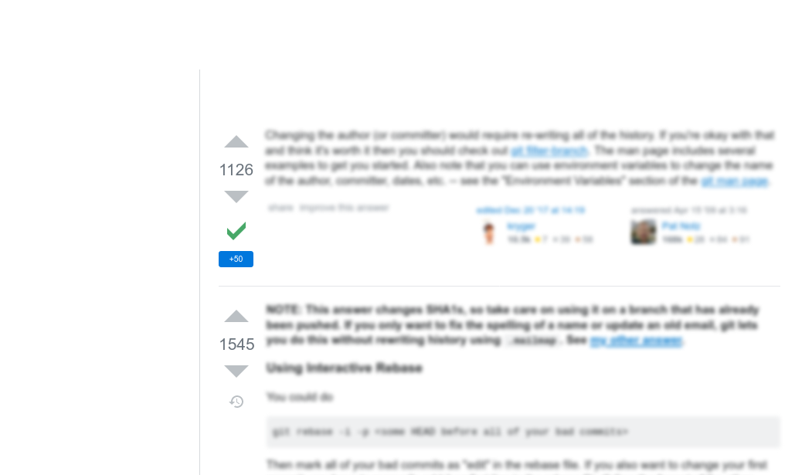

git commit -m MESSAGE
*** Please tell me who you are.
Run
git config --global user.email "you@example.com"
git config --global user.name "Your Name"
to set your account's default identity.
Omit --global to set the identity only in this repository.
fatal: empty ident name (for <>) not allowed
Misnaming: BE CAREFUL
git commit -m MESSAGE
*** Please tell me who you are.
Run
git config --global user.email "you@example.com"
git config --global user.name "Your Name"
to set your account's default identity.
Omit --global to set the identity only in this repository.
fatal: empty ident name (for <>) not allowed
Misnaming: How to fix: Few commits, deep in history
Misnaming: How to fix?

Misnaming: How to fix? *1545 votes
git rebase -i -p a8d2013# <-- hash of the last good commit
# ... mark all needed commits as "edit"
# ... then ... on each commit:
git commit --amend --author "Bo <bo@co.mp>" --no-edit
git rebase --continue
Misnaming: Don't use git commit --author!
git commit --amend --author "Bo <bo@co.mp>"
>>> git log --format=fuller
commit e7ea301 (HEAD -> master)
Author: Bo <bo@co.mp>
AuthorDate: Mon Jan 13 14:25:13 2020 +0300
Commit: Mikalai Saskavets <>
CommitDate: Tue Jan 28 12:39:31 2020 +0300
Пример тестового коммита
Misnaming: How to fix? *1545 votes
git rebase -i -p a8d2013# <-- hash of the last good commit
# ... mark all needed commits as "edit"
# ... then ... on each commit:
git \
-c user.name="Bo" \
-c user.email=<bo@co.mp> \
commit --amend \
--reset-author --no-edit
git rebase --continue
Misnaming: How to fix? *1126 votes
git filter-branch --env-filter '
OLD_EMAIL=""
CORRECT_NAME="Bo"
CORRECT_EMAIL="bo@co.mp"
if [ "$GIT_COMMITTER_EMAIL" = "$OLD_EMAIL" ]
then
export GIT_COMMITTER_NAME="$CORRECT_NAME"
export GIT_COMMITTER_EMAIL="$CORRECT_EMAIL"
fi
if [ "$GIT_AUTHOR_EMAIL" = "$OLD_EMAIL" ]
then
export GIT_AUTHOR_NAME="$CORRECT_NAME"
export GIT_AUTHOR_EMAIL="$CORRECT_EMAIL"
fi
' --tag-name-filter cat -- --branches --tags
Misnaming: How to fix? *1126 votes
git filter-branch --env-filter '
some shell magick here
' --tag-name-filter cat -- --branches --tags
Misnaming: How to fix? *1126 votes
# some shell magick:
OLD_EMAIL=""
CORRECT_NAME="Bo"
CORRECT_EMAIL="bo@co.mp"
if [ "$GIT_COMMITTER_EMAIL" = "$OLD_EMAIL" ]
then
export GIT_COMMITTER_NAME="$CORRECT_NAME"
export GIT_COMMITTER_EMAIL="$CORRECT_EMAIL"
fi
if [ "$GIT_AUTHOR_EMAIL" = "$OLD_EMAIL" ]
then
export GIT_AUTHOR_NAME="$CORRECT_NAME"
export GIT_AUTHOR_EMAIL="$CORRECT_EMAIL"
fi
Git env variables
# just a reminder:
GIT_COMMITTER_NAME
GIT_COMMITTER_EMAIL
GIT_COMMITTER_DATE
GIT_AUTHOR_NAME
GIT_AUTHOR_EMAIL
GIT_AUTHOR_DATE
EMAIL